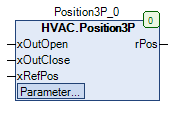

Position3P (FB)¶
FUNCTION_BLOCK Position3P
Short Description¶
Calculation of the current position of a 3-point driveIn addition, a reference position (limit switch) of the drive can be detected.Typical application: Determining the position on a 3-point valve drive
Portrayal¶

Interfaces¶
Inputs¶
Name Datatyp
Range
Init-Value
Function
xOutOpen BOOL Enable - Release -
xOutClose BOOL Input - Release - Closing
xRefPos BOOL Digital input to detect the reference position (limit Switch).
Output¶
Name Datatyp
Range
Init-Value
Function
rPos REAL rMinLimit bis rMaxLimit Display of the current position in %.
Setpoints / Parameter¶
Name Datatyp
Range
Init-Value
Function
iRefPosition INT 0 - 100 0% Reference position of the drive
rMinLimit REAL 0.0 Limit value - minimum position
rMaxLimit REAL 100.0 Limit value - maximum position
tDuration TIME T#120s Operating time of the drive
Functional Description¶
General¶
This function block is used to calculate the current position of a 3-point drive that has no position feedback.
The calculation is based on the duration of the signals at the inputs “Input - Release - Opening” xOutOpen and “Input - Release - Closing” xOutClose.
Each rising edge at the digital input xRefPos (i. e. the drive is currently in it`s reference position) causes the analog output signal rPos to be reset to the setpoint / parameter iRefPosition.
Reference position¶
The digital input xRefPos allows a new adjustment of the position display rPos to a predefined value iRefPosition (0% = rest position - 100% = maximum position).
Each rising edge at the digital input triggers a new adjustment.
Position display rPos¶
It is used to display the current position of the 3-point drive in the range rMinLimit to rMaxLimit and is calculated internally.
Signals at input xOutOpen increase the value of the position display, signals at input xOutClose reduce the value of the position display.
Restrictions / Notes
The 3-point drive must move linearly, i.e. execute the same position changes within the same time periods.
A position change via a possibly existing manual override hardware is not registered.
To avoid deviations between the calculated and the actual position, it is recommended that the readjustment of the position indicator be triggered regularly.
Visualization¶
Codesys¶
- InOut:
Scope Name Type Initial Comment Input xOutOpen BOOL Enable - Release -
xOutClose BOOL Input - Release - Closing
xRefPos BOOL Digital signal for detecting the reference position (limit switch)
iRefPosition INT 0 Reference position of the drive
rMinLimit REAL 0.0 Limit value - minimum position
rMaxLimit REAL 100.0 Limit value - maximum position
tDuration TIME TIME#2m0s0ms Operating time of the drive
Output rPos REAL Display of the current position in %.